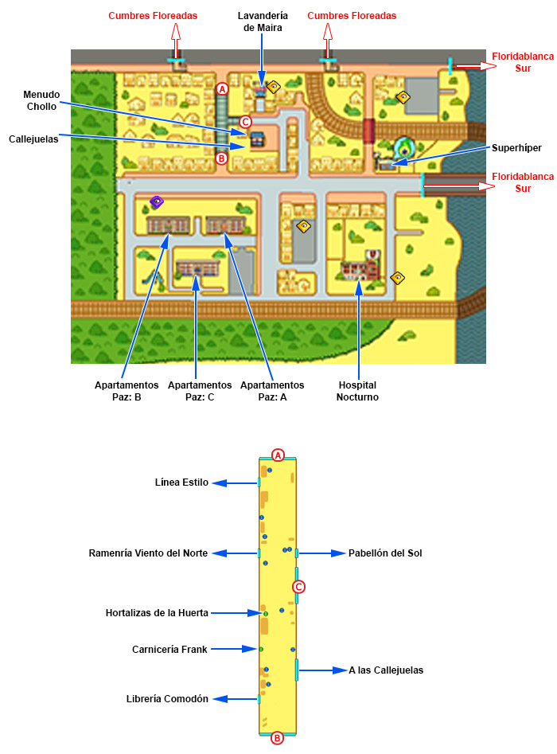
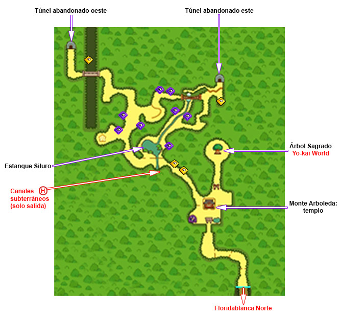
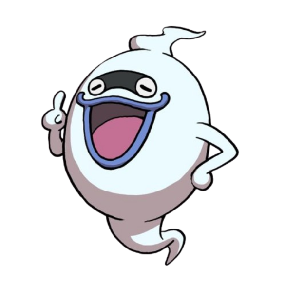
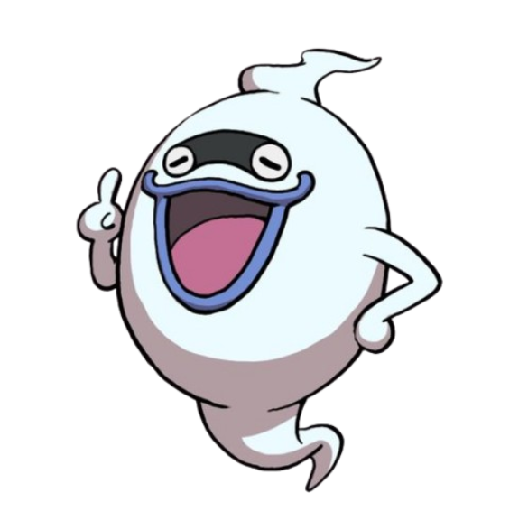

Los Yo-kai son una clase de criaturas de la mitología japonesa y a excepción de algunos casos especiales son invisibles al ojo humano. Algunos tienen partes animales, partes humanas, o partes de los dos. Existe la posibilidad de convertirse en yo-kai despues de la muerte, o hasta que un objeto inanimado se convierta en uno.
Los yo-kai pueden ser divididos en diferentes grupos, estos grupos son denominados tribus y voy cubrir la 8 originales con los yo-kai más caracteristicos de cada una

Los yo-kai que forman parte de este grupo se caracterizan por ser bonitos, agradables, tiernos, encantadores o amistosos.
Algunos integrantes de esta tribu son:
Komasan

Rango:
Jibanyan

Rango:
La Tribu Misteriosa es una tribu que, normalmente tienen una apariencia peculiar.
Algunos integrantes de esta tribu son:
Cotilleja
Rango:
Telespejo
Rango:

Algunos integrantes de esta tribu son:
Felisonte
Rango:
Abuzampa
Rango:

Algunos integrantes de esta tribu son:
Nomevén

Rango:
Enciélago

Rango:
Algunos integrantes de esta tribu son:
Ayay

Rango:
Cantonio
Rango:

Los integrantes de esta tribu suelen contar con cuerpos densos y un espíritu tenaz
Algunos integrantes de esta tribu son:
Robonyan

Rango:
Inquielefante
Rango:
Algunos integrantes de esta tribu son:
Shogunyan

Rango:
Sacoco
Rango:
Algunos integrantes de esta tribu son:
Venocto

Rango:
Noko
Rango:
Los yo-kai se encuentran en todas partes sin embargo no podemos verlos (a no ser que se posea un yo-kai watch)

Sin embargo por razones que aún no se comprenden completamente a los yo-kai les encanta causar estragos y sucesos supuestamente inexplicables en la apacible ciudad de Floridablanca, Floridablanca se puede dividir en varias zonas:
Floridablanca Norte
El lugar se divide en varios barrios: la zona residencial, la avenida y el Parque Triángulo, la orilla del mar, el cruce de la panadería, el sendero de Arboleda y toda la parte del Colegio Floridablanca y la Guardería Pimpollos.

Floridablanca Sur
Es una de las zonas más fuertes a nivel comercial, turístico y costero.

Cumbres Floreadas
Es una zona rural y con extremo contacto con la naturaleza. Aquí se encuentran puntos de mucho interés, tales como el Templo Shoten en donde se puede encontrar a un singular monje, o Segundos Relojes, el local del Sr. Buenavista un gran relojero que asegura haber trabajado con relojes de otro mundo, to un personaje.

Colinas del Aura
La zona más rica de Floridablanca, una zona llena de parque y urbanización.

Zona Comercial
Como su nombre indica, tiene gran cantidad de comercio, teniendo una calle, la Calle del Comercio, repleta de comida para comprar. Esta es el lugar más pequeño de Floridablanca
Monte Arboleda
Es una zona al norte de Floridablanca. A excepción de la deslumbrante naturaleza del lugar, solo se puede destacar una curiosa especie de maquina expendedora al pie de un árbol en la cima del monte, se ha provado antes sacar algo pero lo unico que salió fué una roca en forma de capsula.
Este ha sido un primer contacto con el mundo yo-kai, solo se ha rascado la superficie pero aún asi se te ha revelado a ti mi querido lector que no estás solo en este mundo, es posible que te tomes esta información como una forma de entretenimiento más, y no te judgo por ello es algo complicado de creer, sin embargo tepropongo algo, intenta no pensar en como podria ser posible y planteate "¿Por qué no?"
Y recuerda mi corporeo amigo, en caso de que presencies algún suceso extraño o fuera de lo común tienes que pensar en esta frase:
Autor del articulo:
 
